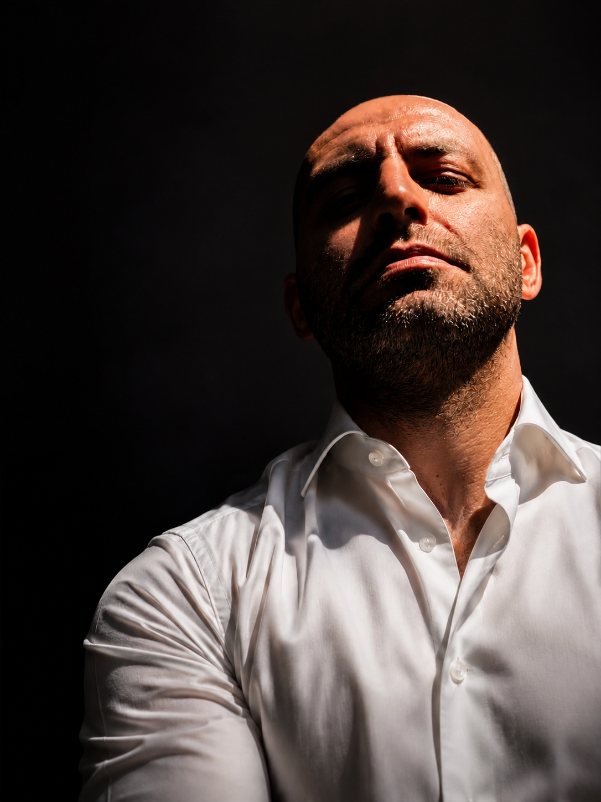

Chi sono
Chi pensa con la propria testa, ha già vinto.
Insegno da undici anni, da quando nel 2015 sono entrato per la prima volta in un'aula come docente di elettrotecnica ed elettronica. In questo tempo ho portato la mia classe di concorso — la B015, i Laboratori di Scienze e Tecnologie Elettriche ed Elettroniche — in tre città diverse: da Prato a Siracusa, fino a Bronte, dove insegno oggi. Ogni trasferimento mi ha costretto a ricominciare, ma mi ha anche insegnato che il mestiere resta lo stesso ovunque: aiutare uno studente a smettere di eseguire un'istruzione e cominciare a capirla.
Le mie competenze coprono l'intero arco della materia che insegno: elettrotecnica, elettronica, informatica, e la progettazione di impianti civili e industriali — la parte più concreta del mestiere, quella che uno studente porta con sé anche fuori dalla scuola.
Nel 2026 questo percorso ha trovato una conferma importante: ho vinto il concorso PNRR3 per la classe di concorso B015, ottenendo la cattedra a tempo indeterminato che ricopro attualmente a Bronte.
Da qualche anno affianco all'insegnamento un interesse che è diventato centrale nel mio modo di lavorare: l'intelligenza artificiale, non come scorciatoia ma come strumento per costruire lezioni più chiare e più curate, restando sempre io a decidere cosa insegnare e come. Questa stessa curiosità mi ha portato a fondare modicaai.it, un progetto di automazione e intelligenza artificiale per le imprese del territorio di Modica, e aisicily.it, che estende lo stesso approccio a scala regionale.
È una passione che non si esaurisce nei confini della scuola: l'intelligenza artificiale, e i suoi campi di applicazione, restano il terreno su cui continuo a imparare — prima ancora di insegnare.